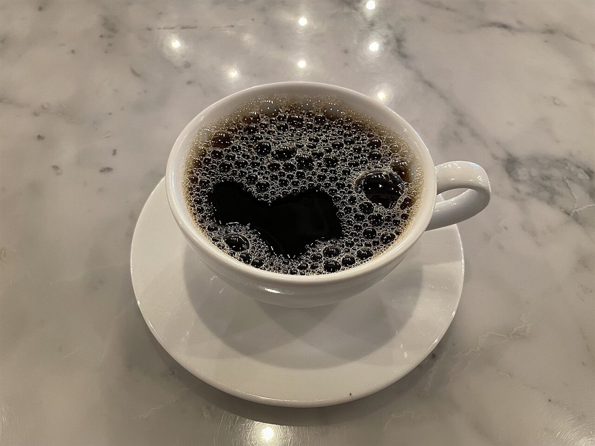

お店のこと
工場だった建物の、珈琲の学び舎
紹介記事によると、珈琲学舎は作業服の生地を織っていた織物工場だった建物を改装し、2020年9月に開いた珈琲店です。まわりには田園風景が広がっています。
店名には、コーヒーを学び、追求し続けるという思いが込められていると紹介されています。マスターはコーヒー豆の卸会社に約20年勤めた方で、一杯ずつ丁寧に淹れることにこだわっているそうです。
- 店内の机や椅子は、マスターの手作りと紹介されています。
- 約3,000冊の漫画や小説が並び、ブックカフェのように過ごせると紹介されています。
- ケーキなどのスイーツは手作りと紹介されています。
- コーヒー豆の購入もできると紹介されています。
上の内容は、ウェブ上の紹介記事で確認できた範囲です。最新の情報はInstagramなどで直接ご確認ください。


メニュー
コーヒーと、手作りのお菓子
紹介記事で名前が挙がっているものです。価格・内容は準備中です。





口コミ
こんな声が届きそうです
以下は制作側が作成したイメージ例です。実在のお客様の声ではありません。
イメージ例
古い工場の建物なのに、中に入ると不思議と落ち着きます。本を読みながら、ゆっくりコーヒーをいただきました。
イメージ例
一杯ずつ淹れてくれるので、待つ時間まで楽しみになります。ケーキと一緒に、また来たいです。
イメージ例
窓の外の田んぼを眺めながら過ごす午後が、ぜいたくでした。コーヒー豆も買って帰りました。